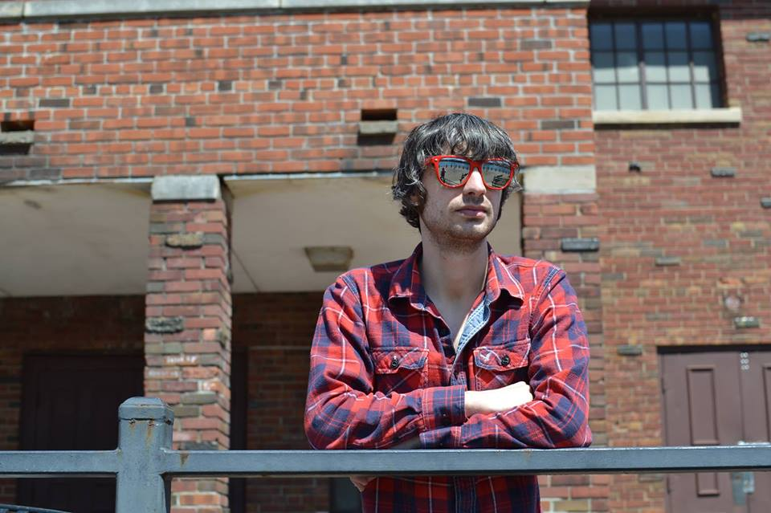

About
"Bittersweetness... flavor of my current state of mind."
Libido Cornucopia is an indie rock band from Portland, Oregon. Their story goes like this... Michael Dante (lead vocals, guitar) was an aspiring musician in southeastern Michigan. Wanting to pursue music professionally, Dante set a goal to relocate to the Pacific northwest. Through a Myers-Briggs Type Indicator themed Facebook group, Dante began chatting with someone he had never met who lived in Portland. The two struck up a friendship and Dante moved to the "rose city" in June 2015. Over the next several months, Dante networked through music events and composed new songs. In March 2016, Dante began sharing demos and performing under the name... Libido Cornucopia.
It was at an open mic where Dante met blues musician and illustrator, Jeremy Famà (drums). The two formed an amicable bond and respect for each other's songwriting and musical performance. In June 2016, when Dante was in the middle of recording Libido Cornucopia EP, he asked Famà to design the album art. Famà agreed to do so. The following July, Dante suggested Famà join Libido Cornucopia as the drummer. Famà again agreed. After Dante and Famà had jammed 4-5 nights a week for 6 hours per night for a month, the two started seeking out bass players to complete the lineup. In early October, Paul Avolese (bass) joined the band. Libido Cornucopia EP was released in October 2016. The rest of the band's story... is currently being written!
